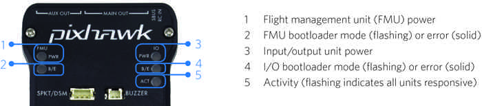
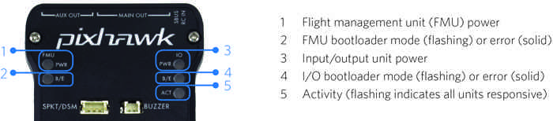
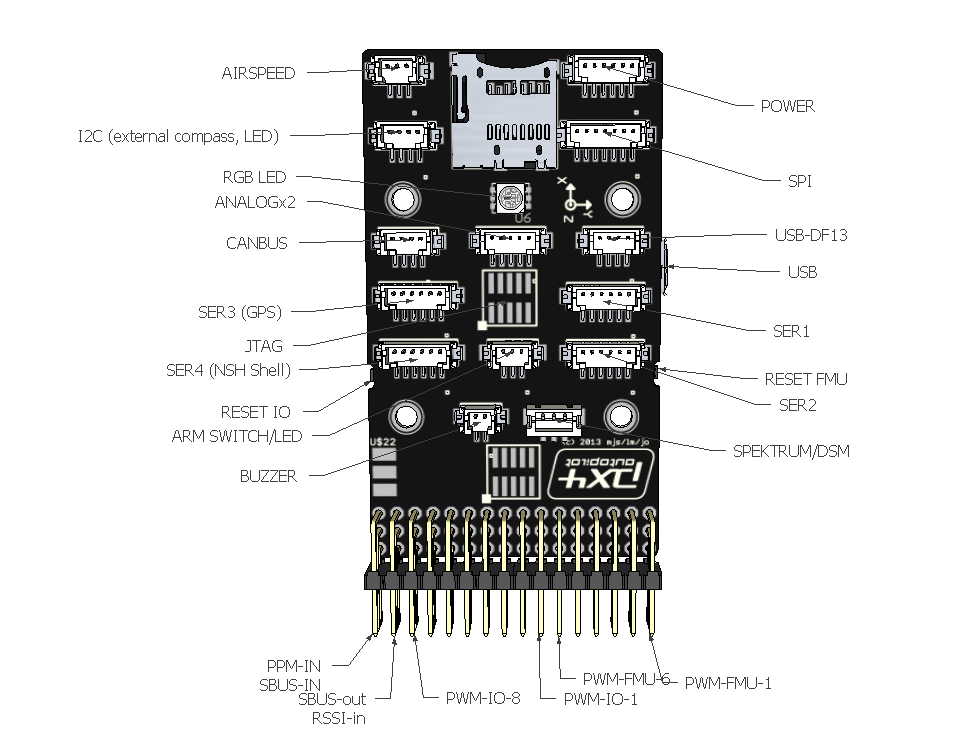
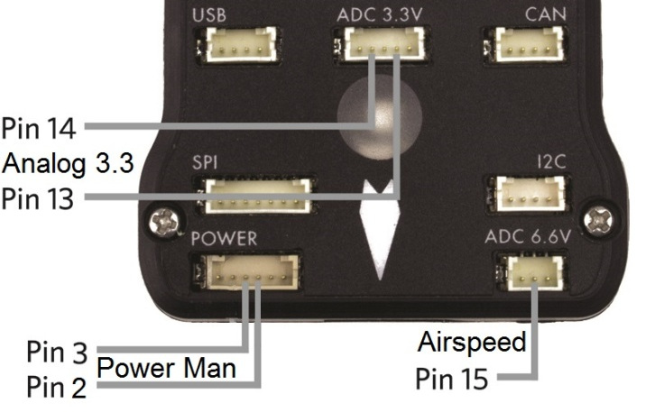

Pixhawk Overview¶
Note
Older versions of Pixhawk use an early version of the STM32F427 chip (RevA, RevY and Rev1). A hardware bug is present in these chips that limit the flash memory to 1 MB. Any boards containing this chip cannot include all ArduPilot features due to this limitation. See Firmware Limitations for details.
Specifications¶
Processor
32-bit ARM Cortex M4 core with FPU
168 Mhz/256 KB RAM/2 MB Flash
32-bit failsafe co-processor
Sensors
MPU6000 as main accel and gyro
ST Micro 16-bit gyroscope
ST Micro 14-bit accelerometer/compass (magnetometer)
MEAS barometer
Power
Ideal diode controller with automatic failover
Servo rail high-power (7 V) and high-current ready
All peripheral outputs over-current protected, all inputs ESD protected
Interfaces
5x UART serial ports, 1 high-power capable, 2 with HW flow control
Spektrum DSM/DSM2/DSM-X Satellite input
Futaba S.BUS input (output not yet implemented)
PPM sum signal
RSSI (PWM or voltage) input
I2C, SPI, 2x CAN, USB
3.3V and 6.6V ADC inputs
Dimensions
Weight 38 g (1.3 oz)
Width 50 mm (2.0”)
Height 15.5 mm (.6”)
Length 81.5 mm (3.2”)
Purchase¶
The Pixhawk 1 was originally manufactured and sold by 3DR.
A slightly improved but fully compatible variant can now be obtained from mRo: mRo Pixhawk 2.4.6 Essential Kit!
Pixhawk connector assignments¶
 

{kind=link}
Pixhawk top connectors¶

Pixhawk PWM connectors for servos and ESCs and PPM-SUM in and SBUS out¶

Pixhawk connector diagram¶
{kind=link}
For all connectors pin 1 is on the right in the above image
Serial 1 (Telem 1) and Serial 2 (Telem 2) Pins: 6 = GND, 5 = RTS, 4 = CTS, 3 = RX, 2 = TX, 1 = 5V.
Pixhawk connector pin assignments¶
TELEM1, TELEM2 ports¶
| Pin | Signal | Volt |
|---|---|---|
| 1 (red) | VCC | +5V |
| 2 (blk) | TX (OUT) | +3.3V |
| 3 (blk) | RX (IN) | +3.3V |
| 4 (blk) | CTS | +3.3V |
| 5 (blk) | RTS | +3.3V |
| 6 (blk) | GND | GND |
GPS port¶
| Pin | Signal | Volt |
|---|---|---|
| 1 (red) | VCC | +5V |
| 2 (blk) | TX (OUT) | +3.3V |
| 3 (blk) | RX (IN) | +3.3V |
| 4 (blk) | CAN2 TX | +3.3V |
| 5 (blk) | CAN2 RX | +3.3V |
| 6 (blk) | GND | GND |
SERIAL 4/5 port - due to space constraints two ports are on one connector.¶
| Pin | Signal | Volt |
|---|---|---|
| 1 (red) | VCC | +5V |
| 2 (blk) | TX (#4) | +3.3V |
| 3 (blk) | RX (#4) | +3.3V |
| 4 (blk) | TX (#5) | +3.3V |
| 5 (blk) | RX (#5) | +3.3V |
| 6 (blk) | GND | GND |
ADC 6.6V¶
| Pin | Signal | Volt |
|---|---|---|
| 1 (red) | VCC | +5V |
| 2 (blk) | ADC IN | up to +6.6V |
| 3 (blk) | GND | GND |
ADC 3.3V¶
| Pin | Signal | Volt |
|---|---|---|
| 1 (red) | VCC | +5V |
| 2 (blk) | ADC IN | up to +3.3V |
| 3 (blk) | GND | GND |
| 4 (blk) | ADC IN | up to +3.3V |
| 5 (blk) | GND | GND |
I2C¶
| Pin | Signal | Volt |
|---|---|---|
| 1 (red) | VCC | +5V |
| 2 (blk) | SCL | +3.3 (pullups) |
| 3 (blk) | SDA | +3.3 (pullups) |
| 4 (blk) | GND | GND |
CAN¶
| Pin | Signal | Volt |
|---|---|---|
| 1 (red) | VCC | +5V |
| 2 (blk) | CAN_H | +12V |
| 3 (blk) | CAN_L | +12V |
| 4 (blk) | GND | GND |
SPI¶
| Pin | Signal | Volt |
|---|---|---|
| 1 (red) | VCC | +5V |
| 2 (blk) | SPI_SCK | 3.3V |
| 3 (blk) | SPI_MISO | +3.3V |
| 4 (blk) | SPI_MOSI | +3.3V |
| 5 (blk) | !SPI_NSS | +3.3V |
| 6 (blk) | !GPIO | +3.3V |
| 7 (blk) | GND | GND |
POWER¶
| Pin | Signal | Volt |
|---|---|---|
| 1 (red) | VCC | +5V |
| 2 (blk) | VCC | +5V |
| 3 (blk) | CURRENT | up to +3.3V |
| 4 (blk) | VOLTAGE | up to +3.3V | 5 (blk) | GND | GND | 6 (blk) | GND | GND |
SWITCH¶
| Pin | Signal | Volt |
|---|---|---|
| 1 (red) | VCC | +3.3V |
| 2 (blk) | !IO_LED_SAFETY | GND |
| 3 (blk) | SAFETY | GND |
Console Port¶
The system’s serial console runs on the port labeled SERIAL4/5. The pinout is standard serial pinout, to connect to a standard FTDI cable (3.3V, but it’s 5V tolerant).
| Pixhawk | FTDI | ||
|---|---|---|---|
| 1 | +5V (red) | N/C | |
| 2 | Tx | N/C | |
| 3 | Rx | N/C | |
| 4 | Tx | 5 | Rx (yellow) |
| 5 | Rx | 4 | Tx (orange) |
| 6 | GND | 1 | GND (black) |
Spektrum/DSM Port¶
The Spektrum/DSM port is for connecting Spektrum DSM-2/DSMX receiver modules.
| Pin | Signal | Volt |
|---|---|---|
| 1 (white) | Signal | +3.3V |
| 2 (black) | GND | GND |
| 3 (red) | VCC | +3.3V |
Connecting and disconnecting DF13 connectors¶
Pixhawk analog input pins¶
This section lists the analog pins available on the Pixhawk. These are virtual pins, defined in the firmware.
Virtual Pin 2 and Power connector Pin 4: power management connector voltage pin, accepts up to 3.3V, usually attached to a power module with 10.1:1 scaling
Virtual Pin 3 and Power connector Pin 3: power management connector current pin, accepts up to 3.3V, usually attached to a power module with 17:1 scaling
Virtual Pin 4 and (No connector Pin): VCC 5V rail sensing. This virtual pin reads the voltage on the 5V supply rail. It is used to provide the HWSTATUS.Vcc reading that ground stations use to display 5V status
Virtual Pin 13 and ADC 3.3V connector Pin 4: This takes a max of 3.3V. May be used for sonar or other analog sensors.
Virtual Pin 14 and ADC 3.3V connector Pin 2: This takes a max of 3.3V. May be used for second sonar or other analog sensor.
Virtual Pin 15 and ADC 6.6V connector Pin 2: analog airspeed sensor port. This has 2:1 scaling builtin, so can take up to 6.6v analog inputs. Usually used for analog airspeed, but may be used for analog sonar or other analog sensors.
{kind=link}
Virtual Pin 102: Servo power rail voltage. This is an internal measurement of the servo rail voltage made by the IO board within the Pixhawk. It has 3:1 scaling, allowing it to measure up to 9.9V.
Virtual Pin 103: RSSI (Received Signal Strength Input) input pin voltage (SBus connector output pin). This is the voltage measured by the RSSI input pin on the SBUS-out connector (the bottom pin of the 2nd last servo connector on the 14 connector servo rail).
This can alternatively serve as SBus out by setting the
BRD_SBUS_OUT parameter ( Copter,
Plane, Rover).

Pixhawk digital outputs and inputs (Virtual Pins 50-55)¶
The Pixhawk has no dedicated digital output or input pins on its DF13 connectors, but you can assign up to 6 of the “AUX SERVO” connectors to be digital GPIO outputs/inputs. These are the first 6 of the 14 three-pin servo connectors on the end of the board. They are marked as AUX servo pins 1 - 6 on the silkscreen as seen above.
To set the number of these pins that are available as digital
inputs/outputs, set the BRD_PWM_COUNT parameter. On Pixhawk this
defaults to 4, which means the first 4 AUX connectors are for servos
(PWM) and the last 2 are for digital inputs/outputs. If you set
BRD_PWM_COUNT to 0 then you would have 6 virtual digital pins and
still have 8 PWM outputs on the rest of the connector.
Note
in firmware versions 4.2 and later, the method for setting a PWM/SERVO/MOTOR output to be a GPIO function is changed. Instead of BRD_PWM_COUNT being used, the individual SERVOx_FUNCTION parameter is merely set to “-1”. If set to “0”, it remains a PWM output, unassigned to a function, and outputs that output’s trim value when board safety is not active. If the servo function is being “mirrored” to a remote device, as in the case of a DroneCAN or KDECAN ESC, then in order to change the autopilot board’s corresponding output pin to be a GPIO, but allow the SERVOx_FUNCTION to still be assigned to the remote device, the SERVO_GPIO_MASK parameter can be used to assign the board pin to be a GPIO without affecting the SERVOx_FUNCTION assignment for the remote device.
The 6 possible pins are available for PIN variables as pin numbers 50 to 55 inclusive.
In summary:
If BRD_PWM_CNT = 2 then
50 = RC9
51 = RC10
52 = Aux 3
53 = Aux 4
54 = Aux 5
55 = Aux 6
If BRD_PWM_CNT = 4 then
50 = RC9
51 = RC10
52 = RC11
53 = RC12
54 = Aux 5
55 = Aux 6
If BRD_PWM_CNT = 6 then
50 = RC9
51 = RC10
52 = RC11
53 = RC12
54 = RC13
55 = RC14
By default, the pins are digital outputs as outlined above. A digital pin will instead be a digital input if it is assigned to a parameter that represents a digital input. For example, setting CAM1_FEEDBAK_PIN to 50 will make pin 50 the digital input that receives a signal from the camera when a picture has been taken.
Powering¶
The topic Powering the Pixhawk explains both simple and advanced power-supply options for the Pixhawk.
See also¶
- [site wiki=”planner”]
Pixhawk Wiring Quick Start <common-pixhawk-wiring-and-quick-start> Powering the Pixhawk <common-powering-the-pixhawk> Mounting the Autopilot <common-mounting-the-flight-controller> Compatible RC Transmitter and Receiver Systems <common-rc-systems>
[/site]
[copywiki destination=”plane,copter,rover,blimp”]